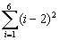

數列的總和(I)
這個程式可以將數列的項自動加起來，但速度較慢(總項數最好小於30)。
| ) | ( | 3 | ( | ( | 2 | - | K |
| ) | cos | sin-1 | ( | K | ( | K | - |
| 1 | ) | ÷ | ( | K | x2 | - | K |
| + | 1 | Exp | +/- | 9 | 9 | ) | ) |
| + | ( | sin | ( | K | sin-1 | 1 | ) |
| ) | x2 | ) | ) | - | K | - | 1 |
| + | ( | K | + | 1 | ) | STO F1 或 F2 | |
例題計算:

按 2ndF DEL (必要) ( X - 2 ) X2 RCL F1
∫dx 1 = 6 = 5 (項數差=6-1) = (顯示答案為31)
相關資料:
數列的總和(II) (Sum of a sequence II)
數列的乘積 (Product of a sequence)